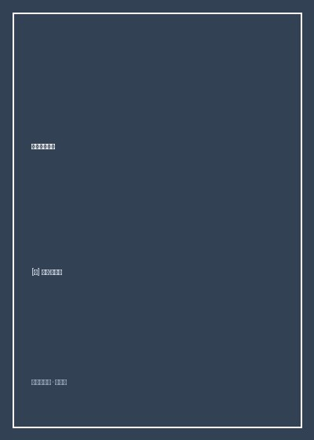

《写作这门手艺》

总体观点
《写作这门手艺》（Draft No. 4: On the Writing Process）是当代非虚构写作（Creative Nonfiction）与文学新闻领域无可争议的心法巨著。作者约翰·麦克菲（John McPhee）不仅曾摘得普利策奖桂冠，更是《纽约客》杂志半个世纪以来的顶梁柱，并在普林斯顿大学执教写作长达四十年，培养了包括何伟（Peter Hessler）、大卫·瑞姆尼克在内的数代全球非虚构文坛巨匠。
麦克菲在书中将写作从神秘莫测的“天才灵感顿悟”下拉至坚实可感、充满机械工程美感的“匠人手艺活”。全书以八篇结构严整的论章展开，核心聚焦于长篇非虚构写作最艰巨的挑战——“结构（Structure）”。麦克菲展示了如何用四开大纸画出抛物线、回形针、双螺旋或横8字形的结构草图，将成百上千张采访卡片严丝合缝地嵌入时空骨架之中。
此外，本书详尽传授了如何写出既不剧透又引人入胜的导语、如何在采访中通过沉默倾听捕获最真实的人性破绽、《纽约客》严苛如显微镜般的事实核查制度，以及标题所指的终极心法——“第四版草稿（Draft No. 4）”：唯有在前三版搭建起粗糙骨骼与血肉后，第四版彻底放慢脚步，查阅辞书、删繁就简、逐字精修动词与韵律，伟大的作品才能由此淬炼而生。
核心观点
-
1. 结构先于文字：如同建造摩天大楼般精心绘制文章骨架
没有坚固的结构，再华丽的辞藻也会散落成一地碎砖。写作前必须将海量采访笔记分类整理，寻找符合事件内在逻辑的时空架构图。
麦克菲在撰写巨著《进入旧荒原》时，用粉笔在谷仓木门上画出一条带有交叉支线的双螺旋结构图，成功把地质学数亿年演化与现代公路旅行线索完美交织。 -
2. 导语是文章的手电筒：照亮前路却绝不提前剧透底牌
优秀的开头不应只是猎奇噱头，而必须像一枚探照灯，向读者暗示这篇长文的基调、核心悬念与内在张力，引导读者不自觉地滑入深处。
写一篇关于全美最大运货驳船船长的报道时，麦克菲花费整整两周推敲导语，最终选择以密西西比河清晨弥漫的大雾与雷达屏幕上的盲点作为静谧而惊心动魄的开端。 -
3. 采访的最高境界是倾听：将舞台完全让渡给被采访者
拙劣的记者总是急于在受访者面前炫耀自己的知识，而卓越的采写者只做安静的倾听者。保持几秒钟的适度沉默，往往能逼出对方未经排练的肺腑真言。
麦克菲在采访一位沉默寡言的独木舟造船木匠时，静静站在一旁看他刨木头整整四个小时一言不发，最终老人放下刨子主动向他倾吐了对工业流水线的切齿痛恨。 -
4. 第四版草稿的核心魔法：做减法并用精准动词替代平庸形容词
第一版是倾倒素材，第二版是搭建骨架，第三版是通读补漏，唯有第四版草稿才是真正的艺术创作。删去所有无实质意义的副词与形容词，让强劲的动词驱动句子飞翔。
与其写“他极其愤怒地大声走进房间”，不如写“他摔门而入”；麦克菲会用荧光笔在草稿上逐字圈出缺乏力量的平庸动词，翻阅《韦氏大词典》寻找那个不可替代的字眼。 -
5. 事实查证是神圣底线：非虚构文学不可被撼动的诚信之石
非虚构写作之所以具有震撼人心的力量，全在于其百分之百的真实性。哪怕为了戏剧性效果篡改一个时间点或捏造一个对话，都是对读者的不可饶恕背叛。
《纽约客》的事实核查员甚至会专门打电话给文章中提到的乡村加油站老板，核对二十年前某个星期二下午油价是否确实是两毛三分钱一加仑。
全书思维导图 · 知识脉络树
全书结构
-
第一章：渐进与递进（Progression）
探讨如何打破事件自然发生的时间流水账顺序，运用逻辑推进（Logical Progression）让读者产生不可遏制的阅读快感。
演示如何以倒叙或插叙手法安排传记材料，先将人物推至命运十字路口再回溯童年伏笔。 -
第二章：结构的精密构造（Structure）
麦克菲分享其标志性的图形化构架法，用手绘几何图表管理海量人物、场景与多重视角线索。
展示如何将采访卡片归类打上编号，按照字母顺序排列放入不同文件夹，实现模块化组装写作。 -
第三章：寻找黄金导语（The Lead）
解密为什么寻找一个好开头需要耗费数周时间，剖析经典非虚构名篇开篇的悬念铺设与语调掌控技术。
剖析海明威与特里斯开篇的语感节奏，演示如何避免在导语中堆砌枯燥的背景数据。 -
第四章：倾听与采访艺术（Interviewing）
传授田野采访中的心理博弈心法，包括速记技巧、录音笔的利弊以及如何与各色戒备心极强的边缘人物建立信任。
探讨在采访中面对谎言与夸大其词时，如何通过交叉质询与委婉回访核实验证。 -
第五章：删繁就简与第四版草稿（Draft No. 4 & Omission）
全书灵魂章节，详解文字精炼术，包括翻阅《牛津英语词典》探寻古义词、消除节奏杂音以及修剪枝桠的减法艺术。
通过真实红笔修改手稿的影印对比，直观展示原本臃肿的三页稿纸如何浓缩为一页字字千钧的传世段落。